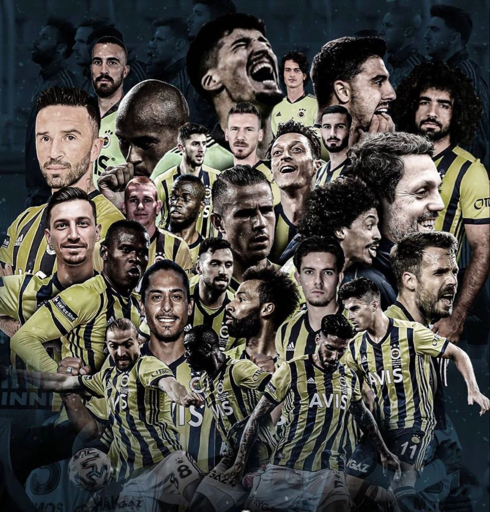

Yeni bir diziye başlarken kafamın rahat olması benim için çok önemlidir. Özellikle izlediğim yabancı diziler
eski olduğu için tüm bölümlerine aynı anda erişebiliyorum ve bu durum hepsini peşi sıra izlememi
sağlıyor. Yani izlediğim dizinin bir sezonunu bitirene kadar başka hiçbir şey ile uğraşmam.
(Aşağıda yer verdiğim dizi ve filmler son zamanlarda izleyip keyif aldığım yapımların başında gelmektedir.)
Mr. Robot
Bilgisayar Mühendisliği okuyup bu diziyi izlemeyenleri linçliyorlarmış diye duydum ve yaklaşık 1
ay önce
Mr. Robot dizisine başladım.
Konusu: Başrol Elliot gündüzleri siber güvenlik uzmanı,
geceleri
hacker
olan asosyal ve
psikolojik sorunlu bir gençtir. "Mr. Robot" lakabıyla tanınan bir başka hacker tarafından
"FSociety"
adlı hacker grubuna davet edilir.
Bu grubun amacı, dünyanın en büyük şirketler topluluğu olana Evil Corp’un finansal verilerini
şifreleyerek
tüm borç kayıtlarını yok etmektir.
Konusu bakımıyla ilgimi çekmesi dışında belki de ilerde bu dizi sayesinde siber güvenlik alanına
yönelebilirim.
The Prestige
Son zamanlarda derslere mola verdikten sonra keyifli film geceleri yapmaya başladım. Film zevkine
güvendiğim bir arkadaşımın tavsiyesi üzerine izlediğim bu film gerçekten de karantina dönemi boyunca
izlediğim en güzel filmdi diyebilirim.
Konusu: Film, 19. yüzyılda hızla değişmekte olan Londra'da başlar.
Sihirbazların ileri derecede saygı duyulan ve gizemli kişiler olarak kabul edildikleri bu dönemde, Genç
sihirbazlar olan Robert Angier (Hugh Jackman) ve Alfred Borden (Christian Bale) şöhret olma
yolundadırlar. Angier'in eşi Julia Piper Perabo yaptıkları bir gösteri sırasında kaza sonucu ölünce,
Angier olaydan Borden'i sorumlu tutar. Bu olay iki sihirbazın arasında ömür boyu sürecek olan düşmanlık
ve rekabetin başlangıcı olur.
The Toy Story
İnsan bazen çocuk olmayı özlüyor ve çocuk animasyonları izliyor. Geçtiğimiz Ramazan Bayramı'nda derslere
1-2 gün ara vermiş ve o günleri film günü ilan etmiştim. Karşıma The Toy Story 4 çıktı ve hemen izledim.
Eğer sizde içinizdeki çocuğu birkaç saatliğine serbest bırakmak isterseniz kesinlikle izleyebilirsiniz.
Konusu: Oyuncak Hikayesi'nde Andy oyuncak koleksiyonu yapmayı çok
seven ve oyuncaklarına değer veren küçük bir çocuktur. Ancak Andy’nin oyuncakları hakkında bilmediği bir
şey vardır. Bu da Andy’nin yokluğunda, oyuncaklarının kovboy Woody’nin önderliğinde hayata geldiğidir.
Bir gün Andy güzel bir hediye alır. Bu hediye de son model bir oyuncak olan Buzz-lightyear’dır. Andy’nin
aldığı bu hediye oyuncaklar arasındaki ego tartışmalarını da beraberinde getirecektir.
Futbol Maçı Seyretmek
Ortaokul 2. sınıfta arkadaşlarımın ve insanların gereksiz fanatikliği yüzünden futbol maçlarını ve
Fenerbahçe taraftarlığını
bırakmış biriydim. Lise 3'de ise tekrardan başlamam gerektiğini düşündüm. Bir haftasonu
arkadaşlarımın
gazıyla gittiğim Sakaryaspor maçından yine hüsranla döndüm. İnsanların sırf kendi tuttukları takım
oyuncularından daha iyiler diye rakip takım oyuncularına sayıp sövmesi bir kez daha hoşuma
gitmemiş aksine zoruma gitmişti. Futbolu o an bir kez daha hayatımdan çıkarmıştım.
Bu sene karantinadan dolayı evde sıkılırken kendime bir hobi edinmem gerektiğini düşünmeye başladım.
İnternette Mesut Özil'in Fenerbahçe'ye geleceği haberlerini gördüm ve nedense bu transfer çok hoşuma
gitti.
Zaman bu zamandır diyip Mesut'un gelişi ile bende tekrardan futbolu maçı izlemeye başladım.
Her ne kadar Fenerbahçe geçtiğimiz sezon iyi bir performans sergileyemesede önümüzdeki sezon böyle
olmayacağını düşünüyor, "Şampiyonluk yakın meşaleleri yakın" diyip noktayı koyuyorum.

Fenerbahçe 2020-21 Sezonu Kadrosu
Kitap Okumak
Doğruyu söylemek gerekirse bu zamana kadar kitap kurdu olmadım ve bunun pişmanlığını hep çektim. Senede
ortalama 5 kitap okurum.
(Aşağıda yer alan kitaplar bu zamana kadar okuduğum kitaplar arasında en ilgimi çeken kitaplardır.)
Sefiller, Victor Hugo
Evdeki kitaplığımızda yer alan ve hep ertelediğim bir kitap olmuştur Sefiller. Orijinali yaklaşık 1600
sayfa olsada elimde 400 sayfalık kısaltılmış hali vardır.
Konusu:Jean Valjean karakteri üzerinden önceleri kötü bir adam
olan kürek mahkumunun iyi bir adama dönüşme hikayesini konu ediniyor. On dokuz yıl kürek mahkumluğu
yapan Jean Valjean, hapisten çıktıktan sonra eski yaşamına dönmemek üzere ne kadar çabalasa da toplum
tarafından dışlanıyor ve zorlu zamanlar geçiriyor. Ona tek iyi davranan ve evinin kapılarını açan
psikopos oluyor. Fakat karakterimiz ne yazık ki psikoposun gümüş yemek takımlarını çalmak gibi bir
gaflete düşüyor. Buna rağmen polisin elinden onu kurtaran psikopos, ona bir de gümüş şamdan hediye
ederek Valjean’in hayatını değiştiriyor.
Semerkand, Amin Maalouf
Lise 2 de kitap sınavında sorumlu olduğumuz bir kitap olan Semerkand bende yeni bir merak uyandırmıştır.
Kitabın bir bölümünde Hasan Sabbah ve fedailerinden bahsediliyor. Bu fedailer dünyaca ünlü Assassin's
Creed oyunun ortaya çıkmasını sağlayan suikastçi birliktir.
Konusu:Kitapta dönemin büyük alimlerinden Ömer Hayyam'ın yazdığı
Semerkant yazmasının hikayesi anlatılmaktadır. Dönemin Büyük Selçuklu hükümdarı Melikşah ve veziri
Nizamülmülk' ün politikaları kendilerinden yüzyıllarca bahsettirmiş. Bu kitap sayesinde Alamut
Kalesi'nin faaliyetleri hakkında da bilgi sahibi olmaktayız. Ayrıca 1900'lü yıllarda İran'ın
yönetiminden ve demokrasiye geçme çabalarından bahsedilmektedir tabi kide İran'ın kültürü yaşayış
biçiminden bilgi sahibi olup İran'ı yakından tanımaktayız.